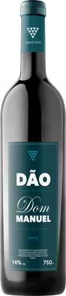
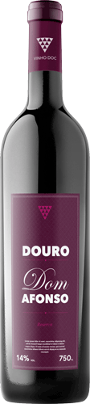
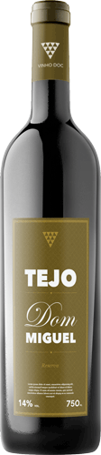
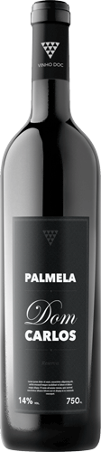

Previous Demo
Back to the Codrops Article
Item Transition Inspiration
Small Component
Full Width
Transparent
Choose an effect...
Slide forward
Table Drop
Slide it
Bottle kick
Off the Shelf




Previous item
Next item
Wine bottle mockup by
Pixeden
If you enjoyed this demo you might also like:
Simple Stack Effects
Medium-Style Page Transition